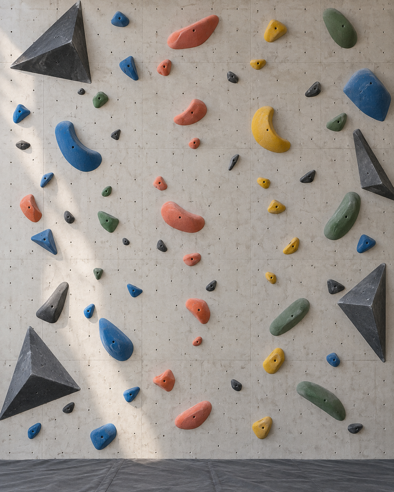

My Climb
Turn a photo or short video into a polished card with an optional grade, gym, caption, and personal highlight.
Product Design · Social Climbing · HCI
Climb together. Share your beta. Keep the crew going.
A bilingual, mobile-first climbing platform that connects route reading, memorable climbs, friendly beta challenges, private crews, and optional partner discovery in one experience.

The opportunity
Recreational climbers arrive in many ways: with friends, a spouse, family, a regular belay partner, or alone. Some boulder and never need a belayer. BETA starts with the climb rather than assuming everyone needs a match.
The product connects route reading, low-friction climb capture, spoiler-safe challenges, private crews, and optional adult partner discovery without becoming another tracker, dating app, or endless social feed.
Read → Climb → Challenge → Connect → Climb again.
The product loop
Study one color and grade, mark only the key moves, then compare the prediction with what your body found.
Save a photo or short video privately, with no crew or detailed annotation required.
Invite friends to predict first, then reveal and compare different solutions without ranking bodies or styles.
Plan privately with your crew, or find a compatible adult partner at the same gym when needed.
Social, without the feed
Turn a photo or short video into a polished card with an optional grade, gym, caption, and personal highlight.
Ask friends how they would climb a route, protect responses from spoilers, then reveal the crew's ideas together.
Compare multiple approaches side by side and celebrate clever, smooth, creative, or resilient movement without choosing a winner.
Collect the moments a private crew chooses to share, then make planning the next climbing day the natural next action.
Design choices
Safety and architecture
Explore the work
Read a route, save a climb, compare beta with friends, reconnect with your crew, or find a compatible partner when needed.